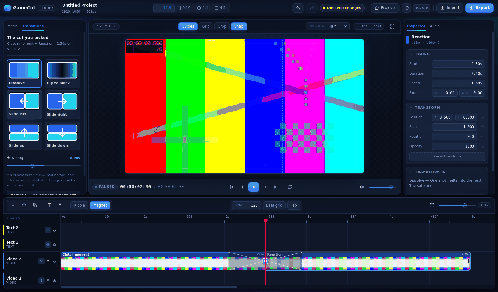
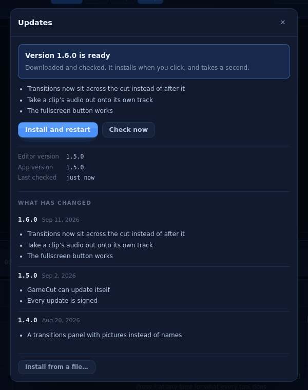

Cut your clips.
Keep your footage.
{{BLURB}}
{{INSTALLER_NOTE}}

What it does
Built for gameplay, not for wedding videos.
A real timeline
Multi-track video, text and audio. Drag, trim, split at the playhead, snap to other clips or to the beat. Zoom with Ctrl+scroll. Everything is undoable.
Transitions on the cut
A button appears where two clips meet. Click it and pick Dissolve, Dip to black or a Slide. It sits across the cut, half either side, so the shot still changes where you cut it.
Crop anything out
Drag a box round a coin counter or a killfeed — or trace any shape freehand. It becomes its own live layer you can move and magnify, with the gameplay still running underneath.
Text that looks finished
A row of ready-made looks rather than a column of sliders. Gradient fill, glow separate from shadow, background plates, one-click entrances, and any font on your computer.
Cuts on the beat
Set the BPM or tap it out, and the timeline draws a line on every beat for clips to snap to. Made for cutting to a Suno track.
Straight to MP4
Renders at full resolution through the same code that draws the preview, so what you watched is what you get. 16:9, 9:16 for Shorts, 1:1 and 4:5 — switching reframes every clip.
Look
Nothing is an unlabelled icon.



Your footage
It never leaves your computer. That is enforced, not promised.
- Your recordings are never uploaded, and never copied. A project remembers where your files are on your own drive and plays them from there. Move a file and it tells you, rather than pretending.
- The editor cannot reach the network at all. Not “does not” — the part of the app that holds your footage, projects and text is refused every network protocol at the process level. There is no code path from your project to the internet.
- No account, no sign-in, no telemetry. Nothing is counted, timed or reported. There is nothing to opt out of.
- One request, ever. Every few hours the app reads one small file from this site to see whether there is a newer version. No identifier, nothing sent, nothing about you or your work. Updates are signed, so nothing can install itself but a real release.
What’s new